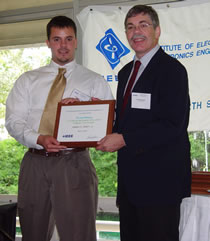
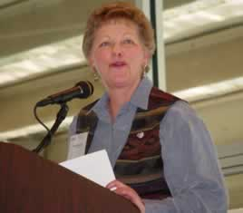
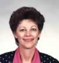

|
"Securing
The Future" |
|
|
"Securing
The Future" |
|
 |
(Click anywhere for this year's photos)
 Many Thanks to: |
| MetroCon
2002 |
Program |
| The program consists of 3 tracks,
Technologies, Software / Telecom, and Power Engineering. Attendees
may roam between tracks as they please. |
|
Time |
Technologies Track
|
Software / Telecom Track |
Power Engineering Track
|
| 8:30-9:30 |
Hot Topics James T. Smith, ISR |
Requirements
Testability and Test Automation |
Evolution
of the Mexican Electric System: An Overview of US-Mexico Interconnections Florencio
Aboytes, Commission Federal de Electricidad |
| 9:45-10:45 |
Intelligent Agents – Autonomous
Software |
Secure
Identity Solutions |
Current
Status of Texas Electric Deregulation Kent Saathoff,
ERCOT |
| 11:00-12:00 |
Edward S. Kolesar, TCU |
Tools to Keep Hackers Out of Your E-Commerce Site (Except to Leave Money) Vern Williams, ICSI |
Fuel Cells as a 'Practical Technology'
for a Distributed Generator George King, Director, Energy Group, HARC |
| 12:00-1:30 |
Keynote
Luncheon Address: |
||
| 1:30-3:00 |
(A) High and Low Energy Photovoltaics
and Its Application to Autonomous Power Generation |
Executable
UML and Model Driven Architecture |
Joint Wind Generation Presentation |
| 3:15-4:45 |
(A)
Media Visualization - Tools
and Techniques Ishfaq Ahmad, UTA |
E911
Mobile Location Development |
CEIDS and
an Integrated Power/ Communications System |
| MetroCon 2002 |
Keynote Address |
|
|
"Dual Use Technologies: Running the Export Control Gauntlet" Shirley Blackwell,
CIA (Ret) |
Shirley
Blackwell retired in 1998 after 20 years as an employee of the Central Intelligence
Agency. During her career at the CIA, her successive primary assignments
were: research assistant on
Near East/North Africa issues; editor; Soviet Science and Technology analyst,
and (after 1991) S&T analyst on the nuclear- and space-capable successor
states of the former USSR. She then held an analytical assignment in the Counter Terrorist
Center before becoming an Export Control Officer in the DCI’s Nonproliferation
Center (NPC). In 1997 she was
jointly sponsored by NPC and the Department of Energy to provide on-site
analytical support to the Counterintelligence and Foreign Interactions Staff
at Sandia National Laboratories (SNL) in Albuquerque, NM. Her major focus there was on the foreign
presence (students, researchers, and foreign visitors) at SNL. Sandwiched into the positions just listed,
she served short stints on the CIA’s Persian Gulf Task Force following
Operation Desert Storm and the Soviet Crisis Task Force during the dissolution
of the USSR. She served in
Vienna, Austria, in 1996 as liaison officer to the US delegations to the
Preparatory and Plenary sessions of the Wassenaar Arrangement (for conventional
arms and dual-use goods and technologies).
After retiring from the US Government, Shirley worked for
two years at Aegis Research Corporation (ARC), first as a senior analyst
and technical writer/editor in the Space Technology Division and then as
a team leader in the UC Project Office of ARC, reviewing security at Los
Alamos and Lawrence Livermore National Laboratories.
In the aftermath of September 11, she retired permanently to follow
her long-held dream of combining her love of writing, teaching, and cooking. She is currently working to establish
a cooking school for people with special dietary or situational needs. She has been married to Louis, an electrical
engineer, for 36 years. They
have two children—a son whose hobby is electronics and sound engineering,
and a daughter who is a technical writer and rhetorician. In her graduate program at NMSU, their
daughter did a rhetorical analysis of the IEEE Code of Ethics.
| MetroCon 2002 - Technologies Track | Abstracts &
Biographies |
See Program Outline and Schedule
Abstract: Nanoscale Science has provided us with a flood of new technologies. We see their emergence in everything from fine-control over the grain structure of materials to the application of genetic engineering in food production. Automotive fuel cells, carbon-nanotube fibers, and biochips. New products are emerging so rapidly that some become obsolete almost before they can be brought to market. The problems of the venture capitalists have become the problems of the corporate boardrooms. How can we maintain a competitive product position in the face of such rapid obsolescence? What technologies are important, and which can be safely ignored? Lessons can be learned from Lucent and others, whose mistakes vershadow the business horizon. Failure to wisely choose from the emerging technologies and then to engineer timely upgrades to roducts and services, can result in a loss of customer confidence, profits, and ultimately stockholder value. Mr. Smith observes that any existing business models will be made obsolete-necessitating a total rethinking of their business. On the other hand, many new opportunities will be enabled. This presentation examines some of technology breakthroughs which have already undergone Mr. Smith's strategic assessment of maturity and importance. These investigations included new research and development in Material Science, Systems Science, MicroElectroMechanical Systems (MEMS), Photonics, Energy Conversion, Networking, Systems Design, and Software Engineering.
Biography: James T. Smith has over 20 years experience in the development and fielding of advanced technical systems. Currently, he is a Principal Member Research Staff with ISR (http://www.isr.us), the Institute for Scientific Research in Fairmont, WV, where he is involved in R&D efforts in the development of artificial neural network-based realtime control systems, and the emerging field of bioinformatics. He continues to actively monitor the pulse of emerging technologies for ISR, and has a newsletter that he distributes. He received his BS in Math and Physics from Millsaps College and his MS in Math and Computer Science from the University of Tennessee at Knoxville. He has done graduate work in engineering at Georgia Institute of Technology, University of Mississippi, and the University of Utah. His early work included design and development of classified and unclassified Radar Algorithms at the Georgia Tech Research Institute, and expert systems for the DARPA Pilot's Associate project at the Lockheed-Georgia Company. He designed and developed a geographical reasoning system (GIS) for the Lisp machine, and a system architecture and implementation approach for an Airborne Cockpit Environment. He also designed and developed an Artificial Intelligence toolkit which was successfully employed in the implementation of a prototype for a NASA TDRS satellite ground terminal monitoring system. Later, as a member of GTE's High Value Capabilities Definition & Assessment staff, Mr. Smith was involved in the development of completely new telecom services and concepts. Projects included Advanced Intelligent Networks (AIN), developing and testing the GTE Waltham laboratories/Bellcore Service Control Point (SCP) platforms, Telecom'95 demonstrations, and development of the Connected Family concept. This was a broadband-connected home and home-office environment, which could interoperate as part of a new family of converged services. Mr. Smith has published many internal and external documents. He has just finished the material for a forthcoming John-WIley book, Communications Services: The Technology of Call Control. Of particular interest, the strategic document: "Emerging Technologies and Trends? How Should GTE Respond?" is a 200+ page assessment of near-term technologies which is available from the author upon request, and on his website, http://www.thejtsmiths.net/Papers/.
MavHome: An Intelligent Home Environment
Diane J. Cook, UTA
9:45-10:45
Abstract: The MavHome Smart Home project is a multi-disciplinary research project at the University of Texas at Arlington focused on the creation of an intelligent home environment. Our approach is to view the smart home as an intelligent agent that perceives its environment through the use of sensors, and can act upon the environment through the use of actuators. The home has certain overall goals, such as minimizing the cost of maintaining the home and maximizing the comfort of its inhabitants. In order to meet these goals, the house must be able to reason about and adapt to provided information. In this presentation, I will discuss the MavHome architecture and intelligent agent software that comprises the project. Demos of current MavHome capabilities will be included, and the status of the project will be updated.
Biography: Diane Cook is a Professor in the Department
of Computer Science and Engineering at the University of Texas at Arlington.
She received her B.S. from Wheaton College in 1985 and her M.S. and Ph.D.
from the University of Illinois in 1987 and 1990, respectively. Her research
interests include artificial intelligence, machine learning, robotics, and
parallel algorithms. Dr. Cook has published over 130 technical papers on
these subjects and is supported by grants from the National Science Foundation,
NASA, DARPA, the state of Texas, and industry.
Edward S. Kolesar, TCU
11:00-12:00
Biography: Dr. Kolesar has 27 years of experience
and devotion to the design, fabrication, modeling and experimental characterization
of microsensors and microactuators. This experience was first gained while
serving as a commissioned officer in the United States Air Force, and since
1993, as the W.A. Moncrief Professor of Engineering at Texas Christian University
(TCU). His current research includes microelectromechanical systems (MEMS),
silicon micromachined gas chromatography systems, and organic semiconductors.
DARPA, the NSF, and several Metroplex corporations fund his research. He
lectures and publishes nationally and internationally on MEMs design and
the experimental characterization of microsensors and microactuators. Before
retiring in 1993 from the United States Air Force as a Lieutenant Colonel
with the academic rank of Professor, he served on the faculty and as Vice
Chair in the Department of Electrical and Computer Engineering at the Air
Force Institute of Technology, Wright-Patterson Air Force Base, Dayton,
OH. There he initiated a microsensors and microtransducers research program
while serving as the research advisor for more than 30 M.S. and Ph.D. students.
In 1993, he joined the faculty in the Department of Engineering at Texas
Christian University, Fort Worth, TX. Dr. Kolesar has served as a technical
consultant with The Johns Hopkins University, the USAF Scientific Advisory
Board, the ARDEX Corporation, the EG&G Mound Applied Technologies Laboratory,
SRI International, the Lockheed Martin Corporation, the Presby Corporation,
the American Research Corporation of Virginia (ARCOVA), Williams Pyro, and
Technispan LLC. He holds 11 U.S. Patents, and is the author of more than
100 refereed journal articles, book chapters and technical reports. He has
received research grants from DARPA, the NSF, the USAF, the Texas Higher
Education Coordinating Board and several Metroplex corporations. He is a
registered Professional Engineer in TX; a member of Tau Beta Pi, Eta Kappa
Nu, and Sigma Xi; and a senior member of the IEEE.
High and Low Energy
Photovoltaics and Its Application to Autonomous Power Generation
Robert R. Walters, ENTECH, Inc.
1:30-3:00
Abstract: This presentation will review the current state of technology, market and applications for solar photovoltaic power systems for both space (high) and terrestrial (low) energy requirements. Concentrating solar photovoltaic systems developed by ENTECH over the last two decades for both applications will be described along with current advanced developments that will enable these systems to address extensive high and low energy applications.
Biography: Dr. Walters is Vice President of Corporate
Business Development & Marketing for ENTECH, Inc., a solar energy company
headquartered in Keller in the Dallas-Fort Worth Metroplex. He is one of
the owners and founders of the Company. His work takes him throughout the
United States and outside the U.S. while working with customers and government
representatives in most of the Sunbelt countries of the world. He has served
on a variety of committees and boards related to planning, implementation
and regulation of solar energy in the United States. He was appointed by
the Governor of Texas to serve on the Texas Energy Coordination Council
to develop an energy policy for Texas. He currently is President of the
Texas Solar Energy Industries Association, has served multiple terms on
the Board of Directors of the Texas Renewable Energy Industries Association,
and was previously the Chair of the Greater Fort Worth Sierra Club. Dr.
Walters served as Program Manager for the 3M/Austin 300 kW Photovoltaic
Project, which was the largest PV system in the world at the time. Prior
to getting into the solar energy business, he served in variety of engineering
positions with the LTV Aerospace Corporation. Dr. Walters has authored many
technical and business development papers. Dr. Walters earned his B.S.,
M.S., Ph.D. in Aerospace and Mechanical Engineering at the University of
Oklahoma.
Technologies for
Creation, Compression and Delivery of Multimedia Information
Ishfaq Ahmad,
UTA
3:15-4:45
Abstract: Communicationof useful information (such as video E-mail and multimedia scenes comprising audio-visual objects, images, and text) on the Internet is highly desirable for bringing leading-edge technology for several industries, such as banking, manufacturing, tourism, sales, entertainment and education. The development of such tools and systems hinges upon a technology that should be standard and yet flexible, portable and adaptive and yet secure, simple to deploy on present and future networking infrastructures and still powerful enough to provide functionalities that were previously inconceivable. This technology is MPEG-4, the new standard developed by the Moving Pictures Experts Group of the International Organization for Standardization for multimedia presentation, compression, and communications. Three main features of MPEG-4 distinguish it from other technologies: object-based nature, interactivity, and a high degree of compression. Our research groups is one of the leading groups engaged in MPEG-4 research. Since the quality of a compressed video generally depends on the bit-rate used during the compression, the challenge is to simultaneously achieve the best possible picture quality, highest compression ratio, and fastest encoding speed. We have designed several new technqiues that collectively work to achieve better quality at a given bit-rate or, alternatively, minimize the bit-rate at a desired level of picture quality. In addition, we have built tools for creation and display of full-scale MPEG-4 multimedia scenes. These tools are compliant with existing formats but are more powerful than those currently available.The interactive MPEG-4 Toolkit provides an environment for generating MPEG-4 based multimedia sequences. Taking advantage of object-based structure of MPEG-4, the authoring tool provides a wide range of functionalities to a novice user for placing multimedia objects in a two dimensional spatial environment with time as third dimension. These multimedia objects can be audio and video clips or images, text, graphics, and animation. The scene generated by the tool can be used as a multimedia presentation or a multimedia document to be transmitted over the Internet as an E-mail message or downloadable from a website. The MPEG-4 Authoring Tool is equipped with our efficient MPEG-4 encoder and decoders producing high quality MPEG-4 sequences at very low bit-rate and running at real-time speed on ordinary PCs. The audio and other objects are also compressed with their relevant encoders included in the scene and all of the compressed objects are multiplexed to generate MPEG-4 compliant coded binary stream. This stream can be stored in an MP4 file for storage or transmitted over the Internet.
Biography: Dr. Ahmad received a BSc degree in Electrical Engineering from the University of Engineering and Technology , Lahore , Pakistan , in 1985, and an MS degree in Computer Engineering and a PhD degree in Computer Science from Syracuse University, New York, U.S.A., in 1987 and 1992, respectively. His recent research focus has been on developing parallel programming tools, scheduling and mapping algorithms for scalable architectures, heterogeneous computing systems, distributed multimedia systems, video compression techniques, and web management. His work in the above areas is published in over 100 technical papers in refereed journals and conferences, with best paper awards at Supercomputing 90 (New York), Supercomputing `91 (Albuquerque), and 2001 International Conference on Parallel Processing (Spain). He is currently a professor of computer science and engineering in the CSE Department of the University of Texas at Arlington. He has lead several R& D projects with academia and industry from Hong Kong, China, and the U.S. His particular areas of focus in industrial work are video (and related audio) compression technologies using MPEG-1, MPEG-2, MPEG-4, and H.263 standards, audio-video processing techniques, video streaming, videotelephone and conferencing systemes. He has helped in the organization of several international conferences and is an associate editor of Cluster Computing, Journal of Parallel and Distributed Computing, IEEE Transactions on Circuits and Systems for Video Technology, IEEE Concurrency, and IEEE Distributed Systems Online.
| MetroCon 2002 - Software/Telecom Track | Abstracts &
Biographies |
See
Program Outline and Schedule
Requirements Testability
and Test Automation
Verlin Kelly, Lockheed
Martin
8:30-9:30
Abstract: Reduction in product development cycle time and increased product quality are the two key driving factors behind the development and use of Requirements Testability and Test Automation techniques. These techniques provide a model-based verification and test process that allows early detection and elimination of product defects and automatic generation of test cases using requirements models. The use of Automated System/Software Test Environments supporting these techniques significantly changes the current product development lifecycle processes by helping eliminate manually intensive and error-prone requirements and testing tasks. Requirements Testability analysis techniques provide the capabilities to analyze requirement and design models to identify conflicting product features prior to implementation. Test Automation techniques provide for the automatic generation of test cases and identification of test coverage associated with generated tests. This paper relates project experiences at Lockheed Martin Aeronautics Company in the use of these Model-Based Verification and Development techniques and tools. Savings in project time and costs are discussed.
Biography: Verlin Kelly is a Staff Specialist at Lockheed Martin Aeronautics Company in Fort Worth, TX. Verlin currently is working several initiatives that include the development of systems and software utilizing UML and automated testing concepts. He has also been involved in the system/software development architecture for Utilities & Subsystems. Verlin led the development of in-house software engineering training curriculum and developed the training course on managing software development while a full time member of the LM Aero Software Engineering Process Group. He coauthored a presentation to the Software Technology Conference on "Quantitatively Managing Multi-company Software Teams". Verlin holds a Masters of Arts degree in Operational Mathematics from the University of Texas at Arlington (UTA) in Arlington, TX and a Bachelors of Arts in Physics & Mathematics from Baylor University in Waco, TX. He is presently a member of the Industry Advisory Council for the Computer Science and Engineering Department of UTA.
Secure Identity
Solutions
Todd Musselman & Ashley Arbuckle, PricewaterhouseCoopers-Secure
Identity Solutions
9:45-10:45
Abstract: Today’s businesses are grappling with ever increasing account administration costs as the number of applications and users continue to grow within an enterprise. To combat this problem, many companies are turning to Identity management, which offers a business strategy that can facilitate cost reduction, increased security, and centralization of security policies, while offering enhanced user experience. Designed around processes governing identity, access and workflow, an Identity Management framework provides what a corporation needs to integrate current technologies with a reliable management infrastructure, creating a more efficient and productive account administration model. New technologies, trends and standards continue to emerge that will greatly impact the Identity Management space. Although these technologies and trends show promise, many challenges still remain. As these technologies begin to mature, businesses must work to deploy the technologies in a secure, evolutionary manner by integrating them with existing identity and access management architectures.
Biography: Todd has five years experience in the IT industry covering security architecture design and application security. Over the last two years, Todd has managed several identity management projects involving the design and build of Enterprise Directories, Authentication and Authorization infrastructure, and Provisioning technology solutions. During this time he has trained or worked with Identity Management products including Netegrity SiteMinder, iPlanet Directory Server, BMC Control-SA, and Oblix NetPoint. Todd holds a Bachelor of Arts degree from the University of Kansas in Political Science and an MBA in International Management from Thunderbird: The American Graduate School of International Management.
Biography: Ashley has over four years experience in the IT security industry. Ashley specializes in security architecture and identity management solutions. He has worked on web-based security and identity management projects for several fortune 500 companies. These projects have involved the design and deployment of global web-based security solutions, directory services, and delegated administration. Ashley holds a Bachelor of Business Administration degree from the Texas Tech University in Management Information Systems and Accounting.
Tools
to Keep Hackers Out of Your E-Commerce Site (Except to Leave Money)
Vern Williams, Sr. Consultant ICSI Consulting Services,
Inc.
11:00-12:00
Abstract: What are the basic requirements to have
a secure and reliable ecommerse site? How do you meet the business objectives
and minimize the risks associated with business on the Internet? We will
address these questions from the standpoint of what key components you need
to include in your plan and how to fit them together.
Biography: Following a distinguished career in
various positions in the US Nuclear Submarine Force, Vern was named as Executive
Officer at the Naval Submarine Training Center, Pearl Harbor, Hawaii, and
later as a Network Engineer at the US Naval Academy. In 1994, after 20 years
in the Navy, > he retired after completing a Masters degree, and has
spent the last
> eight years working for GroundStar, Logicon and Spohn Consulting in
technical and executive roles. He has extensive education and experience
in network administration and design, IT security, disaster recovery, and
systems engineering. He is serving as Task Group Chairman for Security and
Secretary of the Standards Coordinating Committee for the IEEE Electronic
Voting Systems Standards Committee and has recently been selected as a Senior
Member of the IEEE. Mr. Williams holds a Masters of Science in Information
Systems from Hawaii Pacific University and a BS from the US Naval Academy
and is a Certified Information Systems Security Professional (CISSP), Certified
Business Continuity Professional (CBCP) and Cisco Certified Networking Associate
(CCNA).
Executable UML and
Model Driven Architecture
Allan Kennedy, Kennedy Carter
1:30-3:00
Abstract: TBA
Biography: TBA.
Abstract: Developing mobile station (MS) location technologies that meet the U.S. Federal Communications Commission's (FCC) wireless E-911 requirement for emergency location has become an increasingly important topic. The FCC has required that the carriers begin selling and activating ALI (Automatic Location Identification)-capable handsets no later than October 1, 2001 and has also granted a limited waiver of the accuracy standards to certain carriers and the dead line is on September 1, 2002. Since location information can potentially be used for other location-aware applications, there is also an explosive interest in the development of new location-based commercial services. In this talk, we are not only address a summary of the location technologies that have potentially been used as solutions to comply with the FCC E-911 mandate, but also discuss the emergence of location commercial services and explore how mobile location information can be used to (1) improve wireless system capacity and management and (2) increase wireless system functionality for location commercial services. Since location based information may be creating privacy threat to the mobile users, many consumers are hesitant to expose themselves to new forms of advertising. Therefore, we will give some thoughts on how to balance user's privacy and business opportunity.
Biography: Dr. Peter Wang received his Ph.D. degree in Electrical Engineering in 1991 from The University of Texas at Arlington. He is a Senior Research Scientist at Nokia Research Center/Texas. His work covers wireless mobile location study, RF channel modeling, and wireless simulation. He has worked on E911 mobile location project since 1997, which includes the study of mobile positioning technologies and location value-added services. He has twelve US/International patent applications and published more than sixty conference/journal papers. He is an IEEE senior member.
| MetroCon 2002 - Power Engineering Track | Abstracts &
Biographies |
See Program Outline and Schedule
Evolution of the
Mexican Electric System: An Overview of US-Mexico Interconnections
Florencio Aboytes, Manager of Power System Planning, Comision Federal
de Electricidad (CFE) - national electric utility in Mexico
8:30 -9:30
Abstract: From the 2002-2011 Mexican electric system (CFE) generation/ transmission capacity expansion plan, this overview describes load growth and development of generation and transmission intertie projects near the Mexico-US border. It summarizes the main technical characteristics and operating problems of the Mexican System, highlights benefits of electrical interconnection and presents options that were considered to link the ERCOT & CFE systems.
Biography: Dr. Florencio Aboytes is Manager of CFE's Power System Planning Division. He has been with Comision Federal de Electricidad (CFE), the national electric utility in Mexico, since 1975, holding numerous technical positions in system planning and operations. His area of expertise is modeling, analysis, operation, control and planning of electric power systems. He has more than 140 publications in specialized journals, conference proceedings and invited conferences, 5 books in Spanish on the operation and control of electric power systems and 84 research reports as a consultant to electric utilities in Central and South America. Dr. Aboytes has spent his professional career in electric utilities and institutions of higher education. He received his B.Sc. and M.Sc. from Instituto Tecnologico y de Estudios Superiores de Monterrey, Monterrey, México in 1969 and a Ph.D. in Electrical Engineering from Imperial College of Science and Technology, London, England in 1974. Dr. Aboytes is a Fellow of IEEE, Member of CIGRE SC 38, Member of the Academy of Engineering in Mexico and serves as a professor and Chairman of the Graduate Studies Committee, University of Nuevo Leon in Monterrey, Mexico. (www.cfe.gob.mx).
Current Status of
Texas Electric Deregulation
Kent Saathoff, ERCOT Director of Technical Operations
9:45 -10:45
Abstract: ERCOT will discuss experience gained during the first year of full retail competition in the Texas electricity market. This update on ERCOT's efforts will note successes achieved providing market access to retail consumers while maintaining reliability of the electrical grid through the first summer peak load season, as well as, areas that may still need improvement.
Biography: Kent Saathoff is an Electrical Engineering graduate of the University of Texas at Austin and a registered professional engineer in Texas. He started his career at Houston Lighting and Power Company in distribution system protection. He then went to the Public Utility Commission of Texas where he was responsible for review and testimony in proceedings regarding transmission and generation project certification, plant depreciation and rate design and ultimately became Director of the Electric Division. While at the Commission he was instrumental in developing initial rules for transmission access in ERCOT. In 1986 he went to the City of Austin Electric Department where he became Manager of Generation Planning. In 1988 he went to ERCOT as Principal Engineer and in 1996 became Transmission Market Operations Manager at the new ERCOT ISO. In 2000 he became Director of Technical Operations of ERCOT in preparation for retail electric competition in Texas. He is responsible for overseeing real time system operations and planning in ERCOT (www.ercot.com).
Fuel Cells as 'Practical Technology'
for a Distributed Generator
George King, Director, Energy Group, Houston Advanced
Research Center (HARC)
11 :00 -12:00
Abstract: Hydrogen based technology will bring profound change to the energy producing industries. Will this change be disruptive or supportive? The answer to that important question lies in our ability to meet the high expectations that consumers currently have with quality products. These new energy producing products must be clean, efficient, reliable and above all, safe for consumers. The challenge facing today's energy industries is to learn how to apply advancing clean energy technology. Distributive generation is a potential solution to our growing residential and light commercial energy needs. Education, supportive policy and public awareness will provide the support required to carry evolving, clean energy systems into consumer products. It will be our collective responsibilities to convert a disruptive technology into a supportive solution.
Biography: George R. King became Director of HARC's Energy Group in January 2002. He is responsible for research, design, engineering and new technology application programs in support of clean and renewable energy. In addition, he manages related programs associated with policy development and management, regulatory compliance issues and risk identification and assessment. Mr. King brings to the position more than 25 years experience in research management and new technology assessment, especially as they relate to hydrogen fuels. Prior to joining HARC, he served as chief engineer in Reliant Energy Power System's Fuel Cell Division. While there, he was involved in projects related to distributive generation and the selection process for on-site generation into the regulated utility. He was also instrumental in the development of PEM fuel cell based technology systems through the prototype phase and into the pre-production phase. In addition, he managed collaborative research projects with Texas A&M dealing with the adaptation of A&M's core catalysts and active layer technologies. (www.harc.edu)
Joint Wind Generation
Presentation
Henry Durrwachter and Bob Zavadil
1:30-3:00
Part 1 - "The Rush to Wind in Texas", Henry Durrwachter, TXU Energy
Abstract: In 1999, legislation was passed in Texas implementing a Renewable Portfolio Standard (RPS) that mandated installation of 2,000 megawatts of new renewable generating capacity in the State of Texas by January 1, 2009. This presentation will discuss the progress made to date on implementing this mandate, including a review of the Public Utility Commission of Texas rules related to the mandate, the development of new wind generation to meet the mandate and some of the operational issues currently facing wind generators in the Texas market.
Biography: In 1993, Henry Durrwachter was named Generation Planning Manager of TXU Electric. In this position, he coordinated and supervised the preparation and evaluation of future resource needs, alternative supply-side resource plans to meet those needs, reliability studies, economic studies, production costing studies and engineering planning studies used in the development of the TXU Electric annual Integrated Resource Plan. In addition, he has provided engineer-ing support for numerous TXU Electric filings with the Public Utility Commission of Texas (PUCT), including testimony for rate cases, certification proceedings for new generating units, purchased power contract certification proceedings, annual requests for transmission service and other supply-side planning issues. As part of the requirements of Senate Bill 7 that mandated changes in electric utilities' corporate structures, he transferred to TXU Energy in 2001 as a Senior ERCOT Market Specialist. In this role, Mr. Durrwachter works on behalf of TXU Energy Trading to revise and develop appropriate market rules for the competitive Texas electricity market. This work involves active participation in various market stakeholder subcommittees and working groups of the Electric Reliability Council of Texas (ERCOT). In addition, he provides technical expertise and witness support for proceedings at the PUCT that involve TXU Energy. Mr. Durrwachter is a licensed Professional Engineer in the State of Texas, a member of the National Society of Professional Engineers (NSPE), a Senior Member of the Institute of Electrical and Electronics Engineers (IEEE) and a Life Member of Eta Kappa Nu, an electrical engineering honor society. He received a Bachelor of Science degree in Electrical Engineering from the University of Texas at Arlington in 1972. (www.treia.org)
Part 2 - "Power System Integration and Operational
Issues for Wind Energy"
Robert M. Zavadil, Marketing Manager and Senior Consultant, Electrotek Concepts
Abstract: This presentation will provide a technical overview of modern commercial wind turbines and windplants, and delve into current power system engineering topics and questions related to wind energy. The presentation is composed of four parts:
Wind Turbine and Windplant Technology:
Technology used to convert energy from the wind into electric power has been evolving since the early 1980's. While the size of today's commercial wind turbines now rivals those of concepts originally explored in early government-funded R&D projects, current designs owe more to the two decades of experience and incremental technical progress in aerodynamic, mechanical, and electrical engineering that has been gathered by turbine designers, vendors, and windplant operators. Turbine types and technologies in commercial operation will be discussed, along with important balance-of-plant aspects that combine to constitute the 100 MW scale wind plants of today.
Interconnection and Operational Issues:
The connection of a large windplant to the transmission system must not compromise the performance or reliability of the resulting system. Unique aspects of wind turbine technology and operation can pose challenges for electrical design, and in some cases, current engineering practice can fall short in addressing some of these technical questions. Issues related to voltage regulation (both within and external to the wind plant), reactive power planning and medium voltage system design will be discussed.
Integrating with Power System Operations:
With wind now much more than a novelty or R&D venture, questions concerning
impacts of windplants on power system operations, dispatch and scheduling
functions are becoming increasingly common. When a non-negligible fraction
of the generating resource in a control area is not directly dispatchable
or completely predictable, changes in operating practices and procedures
may be required. The consequences of those changes in terms of security,
reliability and economics will become increasing important for both wind
plant owners and control area operators going forward. The behavior of large
wind plants with respect to power system operations and control procedures
and the larger question of ancillary services will be discussed
here.
Augmenting Power System Engineering Practice:
As has been the case with numerous other new technologies, much of the understanding of specific system impacts, as well as benefits, is obtained through various technical analyses and simulations performed by power system engineers and analysts. In many of these evaluations, especially those focused on technical questions, appropriate computer models are a requirement for developing this general understanding of wind energy. Wind energy has emerged quickly in many areas of the country, with the development of the necessary analytical tools and characterizations lagging somewhat behind. The general question of power system engineering practice as it relates to wind energy will be discussed, along with some critical ground-breaking efforts aimed at addressing this general need, such as the model development effort recently initiated by ERCOT.
Biography: Robert M. Zavadil has been engaged in
R&D and consulting activities related to renewable energy, especially
wind generation and photovoltaic power systems, since joining Electrotek
in 1989. He served as primary technical resource for a multi-year research
and development project for the EPRI Photovoltaics Program and was a member
of the international technical team for coordination of research, development,
and testing activities with Japanese electric utilities and government institutions.
He was also a member of an EPRI-sponsored Technical Review Committee overseeing
a feasibility assessment of innovative direct-drive wind turbine generator
technology using advanced motor and power electronics technology. He provides
expert technical assistance and testimony on matters related to wind turbine
and power electronics technology patents in the U.S. and European Union
and provides technical and analytical services to wind turbine manufacturers
and wind plant operations for resolving electrical design and operating
problems. Serving as senior technical consultant on projects and studies
aimed at quantifying ancillary services issues for intermittent generation
technologies such as windplants and directs an Electrotek effort to develop
windplant models for appropriate for studies of transient and dynamic stability
of large power systems. Prior to joining Electrotek in 1989, Mr. Zavadil
was with the Transmission and Distribution Engineering Division of Nebraska
Public Power District. He is a member of IEEE Power Engineering Society,
Power Electronics Society and Industrial Applications Society. He graduated
with a BSEE with Highest Honors from South Dakota State University in 1982.
(www.electrotek.com)
CEIDS and an Integrated Power/ Communications
System
Architecture
Joe Hughes, CEIDS Project Manager, EPRI
3:15-4:45
Abstract: The digital economy is becoming a part of every industry in the world. The way business is conducted, and knowledge and information transmitted is continually changing as the digital economy is shaped. Providing reliable and available quality power to every facet of this new economy, especially the telecommunications and Internet industries, is critical to its success and continuous operation. In response to a growing demand for high quality electricity supply, EPRI and its Electricity Innovation Institute, E2I, it will develop products and services to help enable the digital society and package them under four technology platforms: the self healing digital-quality electric highway, energy solutions for end-use digital applications, value added electricity based business opportunities and digitally enabled energy efficiency. CEIDS (pronounced "seeds"), the Consortium for Electric Infrastructure to Support a Digital Society, will build public/private partnerships that will help satisfy the challenge of defining, designing and building the technologies that provide the backbone for the infrastructure of the digital society.
Biography: Joe Hughes is Project Manager for Distribution System Technologies in the Power Delivery Science and Technology Development Division at EPRI in Palo Alto, California. He has over 24 years experience in the utility industry including 19 years in utility research and development predominantly focusing on communications, networking and distributed computing applications to the electric utility industry. Joe joined EPRI in 2001 to help manage the development of utility automation research. From 1997 to 2001, Joe worked as a consultant on a variety of utility industry R&D projects related to the development of energy related information technologies, including future distribution system designs, customer gateways and controllers, and the implementation of electric industry restructuring. Joe joined Pacific Gas and Electric in 1978 and in 1983, became Program Manager in the Research and Development Department of where he managed a portfolio of projects that included customer systems, metering and utility automation and communications technologies. Joe has been active in a variety of standards initiatives for the energy industry for several years and has a Bachelors degree in Physical Science and a Masters in Computer Systems.
| MetroCon 2002 |
Registration |
| Early-Registration |
|
Late-Registration (After Sept. 10th) |
||||
| IEEE Member |
$175 |
|
IEEE Member |
$200 |
|
Scroll down to Register on-line using
|
| Non-Member |
$250 |
|
Non-Member |
$275 |
|
|
| Student |
$50 |
|
Student |
$60 |
|
|
| MetroCon 2002 |
Organizing Committee |
MetroCon is hosted
by the IEEE Fort Worth Section and organized by the officers of the
section. This year's key organizers are:
| Chairman
Vice-Chairman
|
|
Enabling
Technologies Track Chair Power Engineering
Track |
|
Software
/ Telecom Track Chair Awards Chair
|